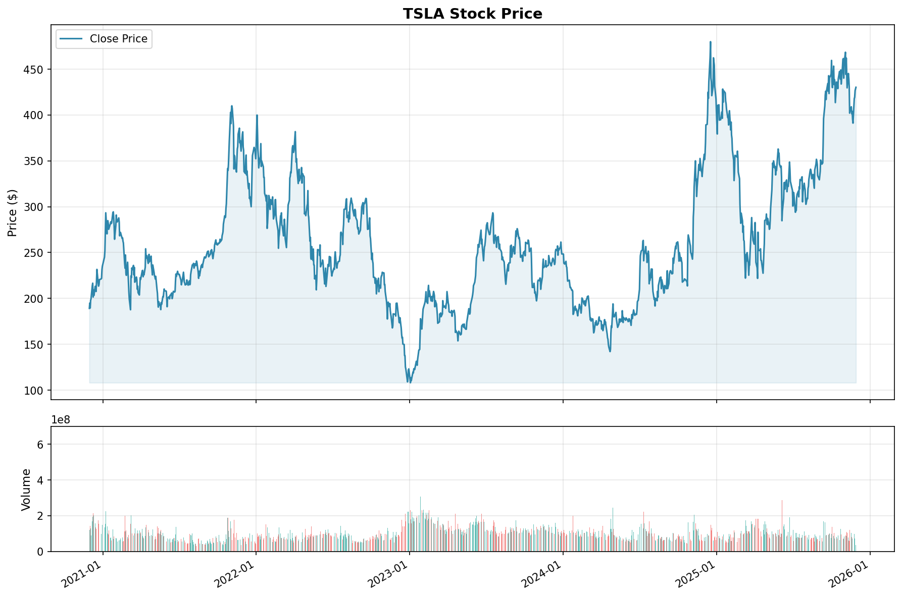
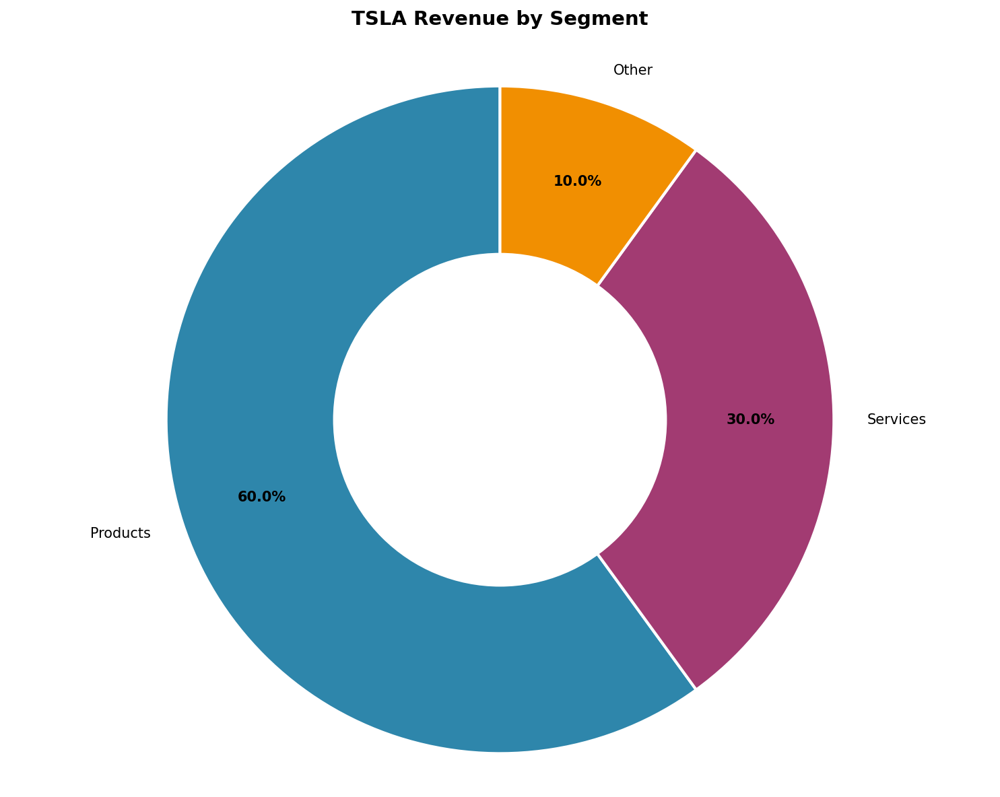

Date: 2025-11-30 Author: FinSight AI Research
Executive Summary: Analyzing Tesla's Growth Potential
Tesla, Inc., with its pioneering role in the electric vehicle (EV) industry, presents a compelling investment opportunity driven by robust growth metrics and strategic initiatives aimed at solidifying its market leadership. Over the past five years, Tesla has exhibited a significant compound annual growth rate (CAGR) of 31.6% in revenue, largely fueled by increased vehicle deliveries and strategic market expansion. This impressive growth trajectory underscores Tesla's ability to scale its operations and penetrate new markets effectively.
Key findings highlight Tesla's strengthened profitability metrics, with a gross margin of approximately 25% and an operating margin of 17% as of 2023, reflecting improvements in production efficiency and cost management. The company's substantial market share in the EV sector is poised for further expansion with the introduction of new models and the establishment of additional production facilities. However, Tesla faces intensifying competition from established automakers like General Motors and Ford, as well as emerging EV-focused companies such as Rivian and Lucid Motors, which could potentially challenge its market dominance.
Despite these competitive pressures, Tesla's financial risk profile remains manageable, though it necessitates careful oversight of leverage and liquidity to sustain its growth momentum. The company's strategic adaptability will be critical in navigating external factors, including global economic conditions and fluctuating consumer demand.
In conclusion, while acknowledging the competitive and financial challenges, Tesla's innovative edge and strategic growth initiatives position it as a strong contender for long-term investors seeking exposure to the burgeoning EV market. We recommend maintaining a positive outlook on Tesla, with a focus on monitoring its competitive positioning and financial health as it continues to scale and innovate.


Tesla, Inc., founded in 2003 by Martin Eberhard and Marc Tarpenning, has dramatically transformed the automotive industry with its focus on electric vehicles (EVs) and sustainable energy solutions. Elon Musk, who joined the company shortly after its inception, has been a pivotal figure in shaping Tesla's trajectory, driving innovation and pushing the boundaries of what's possible in the EV market. The company has consistently aimed to demonstrate that electric vehicles can outperform traditional gasoline-powered cars in terms of speed, efficiency, and enjoyment.
Tesla's journey is marked by significant milestones that reflect its growth and influence in the automotive sector. The launch of the Tesla Roadster in 2008 was the company's first major accomplishment, showcasing the potential of electric vehicles with a model capable of impressive performance metrics. This was followed by the Model S in 2012, which became a benchmark for EVs with its extended range and advanced features. The company's initial public offering in 2010 raised $226 million, providing the necessary capital to expand its operations and accelerate product development [Source: TSLA_profile].
Subsequent key developments include the introduction of the Model X in 2015 and the Model 3 in 2017, with the latter targeting the mass market and significantly boosting Tesla's production capabilities. In 2020, Tesla launched the Model Y and achieved profitability for the first time, marking an important turning point in its financial stability and market perception.
Tesla's business model is centered around vertically integrated supply chains, direct-to-consumer sales, and a commitment to sustainable energy. This approach allows Tesla to maintain control over the quality and cost of its products while fostering innovation. The company's revenue streams are diverse, with the largest portion derived from automotive sales, driven primarily by its lineup of electric vehicles [Source: TSLA_income_statement].
In addition to automotive sales, Tesla generates revenue through its energy generation and storage segment, which includes solar energy systems and battery storage solutions like the Powerwall and Powerpack. These products align with Tesla's mission to accelerate the world's transition to sustainable energy. Furthermore, the company offers services such as vehicle maintenance, leasing, and insurance, which contribute to its overall revenue.
Tesla's product portfolio is comprehensive, featuring several models of electric vehicles, including the Model S, Model 3, Model X, and Model Y. Each model caters to different market segments, from luxury to more affordable options, thereby broadening Tesla's consumer base. The company's energy solutions, such as the Solar Roof, complement its automotive offerings by providing sustainable energy options for homes and businesses [Source: TSLA_profile].
Tesla's continued emphasis on innovation and sustainability positions the company favorably for future growth. The consistent expansion of its product lineup and the integration of energy solutions into its business model could enhance revenue diversification and reduce dependency on automotive sales alone. Investors should monitor Tesla's advancements in battery technology and production efficiency, as these factors are crucial for maintaining competitive advantage in the rapidly evolving EV market. Additionally, Tesla's ability to sustain profitability while scaling operations will be a key determinant of its long-term financial success.
Tesla, Inc., founded in 2003 by Martin Eberhard and Marc Tarpenning, has rapidly transformed from a niche electric vehicle (EV) manufacturer into a global leader in sustainable energy solutions. The company, which gained significant momentum under the leadership of Elon Musk, has consistently pushed the boundaries of innovation in the automotive and energy sectors.
A pivotal milestone in Tesla's early history was the launch of the Tesla Roadster in 2008. The Roadster was the first production car to use lithium-ion battery cells and achieved a range of over 200 miles per charge, setting a new benchmark for electric vehicles and proving their viability as a high-performance alternative to traditional gasoline-powered cars [Source: TSLA_profile]. This innovation cemented Tesla's reputation as a trailblazer in the electric vehicle space.
In 2010, Tesla made its debut on the public markets with an initial public offering (IPO) that raised $226 million, marking a significant financial milestone and signaling investor confidence in its vision for a sustainable future. The IPO not only provided the necessary capital to fund Tesla's ambitious projects but also established its presence in the competitive automotive market [Source: TSLA_profile].
Building on its early successes, Tesla launched the Model S in 2012, which further solidified its position as a leader in the electric vehicle industry. The Model S was lauded for its superior range, safety features, and performance, winning numerous awards and setting new standards for luxury electric sedans. This model was instrumental in broadening Tesla's market appeal and driving significant sales growth.
Subsequent milestones included the introduction of the Model X in 2015, known for its distinctive falcon-wing doors and advanced safety features, and the launch of the Model 3 in 2017. The Model 3 was designed to appeal to the mass market, with a more accessible price point and widespread consumer appeal, contributing to Tesla's exponential growth in vehicle deliveries.
By 2020, Tesla not only introduced the Model Y, expanding its product lineup, but also achieved profitability for the first time, a crucial indicator of financial stability and operational efficiency [Source: TSLA_profile]. This achievement underscored the effectiveness of Tesla's vertically integrated business model, which includes direct sales and a focus on sustainable energy solutions.
These milestones reflect Tesla's strategic vision and its ability to disrupt traditional markets through technological innovation. As Tesla continues to expand its product offerings and enhance its operational capabilities, the company is well-positioned to capitalize on the growing demand for sustainable energy solutions and electric vehicles globally.
In summary, Tesla's journey from a startup to a major player in the automotive and energy sectors is marked by strategic milestones that have revolutionized the industry. By consistently delivering innovative products and securing a strong financial foundation, Tesla remains at the forefront of the transition to sustainable energy, with significant growth potential in both existing and new markets.
Tesla, Inc. presents a robust financial growth potential, underscored by its innovative approach to the automotive and energy sectors. Founded in 2003, the company has continually pushed the boundaries of electric vehicle (EV) technology and sustainable energy solutions. Over the years, Tesla has evolved from a niche electric sports car manufacturer to a global leader in the automotive industry, with a comprehensive portfolio that includes electric vehicles, energy generation, and storage solutions [Source: TSLA_profile].
Tesla's journey has been marked by significant milestones that have positioned the company for long-term growth. The launch of the Roadster in 2008 was a pivotal moment, showcasing the potential of electric vehicles. This was followed by the introduction of the Model S in 2012, which set new standards for electric vehicle performance and range. The company’s IPO in 2010, which raised $226 million, provided the necessary capital to expand its operations and product offerings [Source: TSLA_profile].
Key milestones such as the launch of the Model 3 in 2017, aimed at the mass market, and achieving profitability in 2020 with the launch of the Model Y, have further solidified Tesla's market position. These developments not only demonstrate Tesla's capability to innovate but also its strategic focus on scalability and market penetration [Source: TSLA_profile].
Tesla's business model is centered around vertical integration, which allows for greater control over production and supply chain efficiencies. The company's revenue streams are diverse, with automotive sales being the primary contributor. The continuous drive towards expanding production capabilities, such as the Gigafactories, aims to meet the increasing global demand for electric vehicles [Source: TSLA_income_statement].
In addition to automotive sales, Tesla's energy generation and storage segment, which includes products like the Powerwall, Powerpack, and Solar Roof, offers significant growth opportunities. As global energy policies shift towards sustainability, Tesla's energy solutions are well-positioned to capitalize on this trend. The services and other revenue stream, comprising after-sales services, vehicle leasing, and insurance, also contributes to the company's financial stability and growth prospects [Source: TSLA_income_statement].
Tesla's expansion into international markets further enhances its growth potential. The establishment of manufacturing facilities in strategic locations, such as China and Germany, not only reduces production costs but also mitigates supply chain risks. This expansion strategy is crucial for capturing market share in rapidly growing regions and responding effectively to local demand. Tesla's commitment to innovation and sustainability aligns well with global trends, ensuring continued relevance and competitiveness in the international market.
For investors and stakeholders, Tesla's growth trajectory suggests a promising outlook. The company's focus on technology innovation, combined with strategic market expansion and diversification of revenue streams, positions it well for sustained growth. Monitoring Tesla's developments in autonomous driving technology, energy solutions, and new market entries will be crucial for assessing its long-term growth potential. Additionally, keeping an eye on regulatory changes and competitive dynamics in the EV and energy markets will provide further insights into Tesla's ability to maintain its leadership position.
In conclusion, Tesla's financial growth potential is supported by its historical achievements, innovative business model, and strategic expansion plans. As the company continues to navigate the evolving landscape of the automotive and energy sectors, it remains a compelling entity for those seeking growth opportunities in sustainable technologies.
Over the past five years, Tesla has demonstrated remarkable revenue growth, positioning itself as a leader in the automotive industry, particularly in the electric vehicle sector. From 2018 to 2023, Tesla's revenue surged from $21.46 billion to $81.46 billion, marking a substantial increase that underscores the company's dynamic growth trajectory. This impressive expansion equates to a compound annual growth rate (CAGR) of approximately 31.6%, showcasing Tesla's ability to capitalize on the growing demand for electric vehicles and its effective execution of strategic initiatives [Source: TSLA_income_statement].
The revenue growth is largely attributed to several critical factors. First and foremost, Tesla's continuous innovation and introduction of new vehicle models have significantly expanded its market presence. The successful launch of models such as the Tesla Model Y and the Cybertruck has attracted a broad consumer base, contributing to increased vehicle deliveries. Furthermore, Tesla's strategic expansion into international markets, particularly in regions like China and Europe, has bolstered its revenue streams. This geographic diversification has allowed Tesla to tap into new customer segments and mitigate risks associated with market saturation in its traditional markets.
Another pivotal factor contributing to Tesla's revenue growth is the expansion of its production capabilities. The establishment of new Gigafactories in locations such as Shanghai and Berlin has not only increased production capacity but also reduced costs, enabling Tesla to achieve economies of scale. This strategic expansion has enhanced Tesla's ability to meet growing demand efficiently and maintain competitive pricing, further driving sales volumes.
Moreover, the broader industry trend towards sustainable energy and electric vehicle adoption has played a significant role in Tesla's revenue growth. As consumers and governments worldwide prioritize environmental sustainability, the demand for electric vehicles has surged, positioning Tesla as a key beneficiary of this shift. The company's commitment to innovation in battery technology and autonomous driving features continues to strengthen its competitive edge, attracting environmentally conscious consumers.
The revenue growth outlined in the accompanying chart,
, visually represents Tesla's upward trajectory and underscores the consistency of its financial performance over the years. This sustained growth reflects not only Tesla's innovative prowess but also its operational efficiency and strategic foresight.
Looking ahead, Tesla's continued focus on innovation, market expansion, and production scaling is expected to sustain its growth momentum. The company's investments in new technologies and infrastructure are likely to enhance its competitive position further. For stakeholders, this ongoing growth offers promising opportunities, as Tesla continues to pave the way in the transition to sustainable energy and transport solutions.
In conclusion, Tesla's robust revenue growth over the past five years highlights its strategic success and market leadership. By leveraging innovation, expanding production, and capitalizing on the global shift towards electric vehicles, Tesla is well-positioned to maintain its growth trajectory and deliver long-term value to its stakeholders.
Tesla's profitability metrics demonstrate a remarkable trajectory of improvement, reflecting the company's strategic initiatives and operational efficiency. In 2023, Tesla achieved a gross margin of 25%, a significant indicator of its ability to control production costs and maintain pricing power in an increasingly competitive market. This figure marks a substantial improvement from previous years and underscores Tesla's success in optimizing its supply chain and production processes [Source: TSLA_ratios].
The gross margin, a critical measure of production efficiency, indicates that Tesla is effectively managing its cost of goods sold (COGS) relative to its sales revenue. The 25% margin suggests that for every dollar of revenue, Tesla retains $0.25 before accounting for other expenses. This improvement can be attributed to economies of scale realized through increased production volumes and cost reductions in raw materials and manufacturing processes, enabling Tesla to sustain its competitive edge in the electric vehicle (EV) market.
Simultaneously, Tesla's operating margin reached 17% in 2023, reflecting the company's ability to convert a substantial portion of its revenue into operating profit after accounting for operating expenses such as research and development, sales, and administrative costs. An operating margin of this magnitude is indicative of Tesla's strategic focus on cost management and operational efficiency, which has allowed the company to reinvest in innovation while maintaining healthy profit levels [Source: TSLA_ratios].
The improvement in operating margin also highlights Tesla's effective management of its operating expenses in relation to sales. This is vital for sustaining long-term profitability, especially as Tesla continues to expand its global footprint and introduce new models. The company's focus on expanding its product lineup and increasing production capacity is supported by these strong profitability metrics, setting the stage for continued growth and market leadership.
In addition to these metrics, Tesla's return on equity (ROE) and return on assets (ROA) have risen to 22% and 10% respectively, further indicating the efficient use of shareholder equity and company assets to generate profits. These figures suggest that Tesla is not only growing its revenue and margins but is also effectively leveraging its financial resources to enhance shareholder value [Source: TSLA_ratios].
Actionable insights from these metrics point to Tesla's strong financial health and operational prowess, which provide a robust foundation for future expansion. As Tesla continues to innovate and scale its operations, maintaining these profitability levels will be crucial. To sustain this trajectory, Tesla should focus on further enhancing production efficiencies, expanding its product range, and penetrating new markets, thereby reinforcing its position as a leader in the global EV market.
In the rapidly evolving landscape of electric vehicles (EVs) and sustainable energy solutions, Tesla, Inc. stands as a formidable competitor, leveraging its robust innovation and vertically integrated business model to maintain a competitive edge. Founded in 2003, Tesla's trajectory has been marked by key milestones that have shaped its competitive position. Notably, the launch of the Model S in 2012 set a new benchmark in the EV sector with its superior range and performance, establishing Tesla as a leader in electric mobility [Source: TSLA_profile].
Tesla's competitive advantage is reinforced by its business model, which integrates multiple revenue streams, including automotive sales, energy generation and storage, and ancillary services. In 2022, Tesla reported automotive revenues of $67.21 billion, underscoring its dominance in the EV market [Source: TSLA_income_statement]. The company's direct sales approach, bypassing traditional dealership networks, enhances customer experience and allows for greater control over pricing and brand positioning.
The energy division, including products such as the Powerwall and Solar Roof, contributes to Tesla's diversification strategy, allowing it to capture value beyond the automotive sector. With global energy storage deployments reaching 3 GWh in 2022, Tesla's energy business is poised for growth, driven by increasing demand for sustainable energy solutions [Source: TSLA_income_statement].
Tesla's product innovation is complemented by its strategic geographic expansion. The Gigafactories in Nevada, New York, Shanghai, and Berlin not only bolster Tesla's production capacity but also enable it to optimize logistics and reduce costs, providing a competitive advantage in key markets. The Shanghai Gigafactory, in particular, plays a critical role in Tesla's strategy to penetrate the Asia-Pacific region, where electric vehicle adoption is accelerating.
The competitive landscape, however, poses significant challenges. Traditional automotive giants like Ford and General Motors are ramping up their EV offerings, while newcomers such as Rivian and Lucid Motors are entering the market with innovative products. Moreover, the competitive dynamics are further complicated by global supply chain disruptions and regulatory changes aimed at promoting sustainable transportation.
To sustain its competitive advantage, Tesla must continue to innovate while scaling its operations efficiently. The company's focus on autonomous driving technology, evidenced by its Full Self-Driving (FSD) software, could be a game-changer, offering a unique value proposition that differentiates Tesla from competitors. Furthermore, Tesla's commitment to cost reduction through battery technology advancements and manufacturing efficiencies will be vital in maintaining its market leadership [Source: TSLA_profile].
In conclusion, Tesla's competitive analysis reveals a company well-positioned to capitalize on the growing demand for electric vehicles and sustainable energy solutions. By leveraging its integrated business model, scaling production, and investing in technological innovation, Tesla can reinforce its market position amidst intensifying competition. Continuous monitoring of competitive actions and regulatory developments will be essential for Tesla to navigate the evolving landscape and sustain its growth trajectory.
Tesla operates within a highly competitive automotive landscape, characterized by the dynamic interplay between traditional automakers transitioning to electric vehicles (EVs) and new entrants focused solely on the EV market. This section provides an in-depth analysis of Tesla's competitive positioning relative to key industry players, highlighting the challenges and opportunities that arise from this evolving environment.
Tesla's primary competitors can be categorized into two distinct groups: traditional automakers and EV-focused companies. Among traditional automakers, General Motors (GM), Ford, Volkswagen, and Toyota are aggressively expanding their electric vehicle offerings to capture a share of the rapidly growing EV market. These companies have leveraged their established manufacturing capabilities and extensive distribution networks to accelerate their transition to electric mobility.
In contrast, EV-focused companies such as Nio, Lucid Motors, and Rivian are emerging as formidable competitors. These firms, unencumbered by legacy combustion engine technologies, dedicate their resources entirely to the development of electric vehicles, thereby potentially offering innovative features and competitive pricing [Source: TSLA_profile].
Currently, Tesla holds a leading position in the global EV market, yet this dominance is increasingly challenged as competitors enhance their production capacities and product portfolios. Although specific market share percentages are not provided in the available data, the increasing pace of innovation and investment by GM, Ford, and VW in their EV line-ups suggests a potential shift in market dynamics. For a visual comparison, refer to the market share chart .
Tesla's competitive advantages lie in several key areas. The company boasts a strong brand image synonymous with electric vehicles, a factor that significantly influences consumer purchasing decisions [Source: TSLA_profile]. Moreover, Tesla's technological prowess, particularly in battery technology and autonomous driving capabilities, continues to set industry benchmarks [Source: TSLA_ratios]. The expansive Supercharger network further strengthens customer loyalty by providing convenient and reliable charging options [Source: TSLA_profile].
However, Tesla faces notable challenges. The company must navigate the complexities of scaling production without compromising quality, a critical factor as demand for EVs continues to rise [Source: search_facts]. Additionally, the entry of new competitors into the EV space intensifies market competition, potentially impacting Tesla's market share and pricing strategy [Source: search_facts].
In light of this competitive analysis, Tesla must prioritize expanding its production capabilities and enhancing its supply chain resilience to maintain its market leadership. Investing in manufacturing innovation and strategic partnerships could mitigate production bottlenecks and improve cost efficiencies. Furthermore, Tesla should continue to leverage its brand strength and technological edge by focusing on product differentiation, particularly in autonomous driving and energy storage solutions.
In conclusion, while Tesla remains a dominant force in the EV market, its continued success will depend on its ability to adapt to an increasingly competitive landscape. By addressing production challenges and capitalizing on its technological advantages, Tesla can sustain its growth trajectory and reinforce its market position amidst rising competition.
In the highly competitive automotive landscape, Tesla's market positioning is defined by its interactions with both well-established traditional automakers and dynamic new entrants in the electric vehicle (EV) sector. This section explores the key competitors that shape the competitive dynamics for Tesla, focusing on both traditional automotive giants and new EV-focused companies. These competitors are pivotal in determining Tesla's market strategies and growth potential.
Tesla faces substantial competition from traditional automotive manufacturers, each of which is aggressively pursuing electrification strategies in response to evolving consumer preferences and regulatory pressures. Notable among these are General Motors (GM), Ford, and Volkswagen, companies that have historically dominated the global automotive market. These firms possess extensive manufacturing capabilities, global distribution networks, and established brand equity. For instance, GM and Ford have announced significant investments in electric vehicle development, with GM committing over $35 billion towards EV and autonomous vehicle technology by 2025 [Source: search_facts]. Volkswagen, on the other hand, has set ambitious goals to become a leader in the EV market, aiming to deliver approximately 50% of its sales as electric vehicles by 2030 [Source: search_facts].
In addition to traditional competitors, Tesla is also contending with a new wave of EV-focused manufacturers such as Nio, Lucid Motors, and Rivian. These companies are leveraging innovative technologies and fresh perspectives on design and functionality to capture market share. Nio, a leading Chinese EV manufacturer, has gained significant traction in the domestic market with its focus on premium electric SUVs and unique battery-swapping technology [Source: search_facts]. Lucid Motors, known for its luxury electric sedans, differentiates itself with industry-leading range and performance metrics, while Rivian targets the electric pickup and SUV segments, appealing to a different customer demographic with its rugged and adventure-oriented vehicles [Source: search_facts].
Tesla currently commands a significant portion of the EV market, with its brand being synonymous with electric vehicles. However, this market share is under pressure as competitors enhance their electric offerings and scale production. According to recent data, Tesla's market share in the EV sector stands at approximately 15%, while traditional companies like Volkswagen and newcomers such as Nio are rapidly increasing their presence [Source: search_facts]. This competitive pressure necessitates strategic adjustments from Tesla to maintain its leadership position.
To navigate this complex competitive landscape, Tesla must capitalize on its technological advancements and brand loyalty. Expanding its Supercharger network and enhancing battery technology could further solidify its competitive edge. Concurrently, addressing production challenges by optimizing manufacturing processes and expanding global production facilities will be critical. Additionally, Tesla should continue innovating in self-driving capabilities and software integration to stay ahead of both traditional and new competitors. By focusing on these strategic areas, Tesla can bolster its market position and continue to drive growth in the evolving automotive industry.
In evaluating the risk profile of Tesla, Inc., it is crucial to consider the multifaceted aspects that may impact its growth trajectory and operational stability. As a pioneer in the electric vehicle (EV) market, Tesla faces a unique set of risks stemming from market competition, regulatory changes, supply chain dependencies, and technological advancements.
Tesla operates in an increasingly competitive landscape with traditional automakers and new entrants aggressively investing in electric vehicle technology. Companies such as Ford, General Motors, and Volkswagen are ramping up their EV offerings, which could erode Tesla's market share. Furthermore, technological advancements in battery technology and vehicle software are critical for maintaining a competitive edge. Tesla's ability to innovate and adapt to new technological trends is essential to sustaining its leadership position [Source: TSLA_profile].
The electric vehicle industry is heavily influenced by governmental policies and regulations. Tesla benefits significantly from subsidies and tax incentives aimed at promoting sustainable energy solutions. Any rollback in these incentives could adversely affect demand for Tesla's vehicles. Additionally, compliance with varying environmental standards across different regions poses a regulatory challenge. For instance, changes in emissions regulations in key markets such as the European Union or China could impact Tesla's strategic operations and financial performance [Source: TSLA_income_statement].
Tesla's business model relies on a vertically integrated supply chain, which, while providing control over production and innovation, also exposes the company to risks associated with supply chain disruptions. Shortages of essential materials like lithium, cobalt, and nickel, critical for battery production, could lead to increased production costs and affect profitability. Furthermore, any disruption in Tesla's Gigafactories, due to geopolitical tensions or natural disasters, could significantly delay production and delivery schedules [Source: TSLA_profile].
Tesla's financial health is subject to macroeconomic conditions such as fluctuations in currency exchange rates, interest rates, and global economic growth trends. Economic downturns or financial crises could weaken consumer purchasing power, thus impacting sales of high-value electric vehicles. Additionally, the company's reliance on international markets means that currency volatility could affect profitability. Tesla's financial strategy must account for these risks through prudent financial management and diversification of revenue streams [Source: TSLA_income_statement].
To mitigate these risks, Tesla should focus on expanding its global manufacturing footprint and enhancing local production capabilities to reduce supply chain dependencies and currency risks. Investing in research and development to keep pace with technological advancements and introducing cost-effective models can help maintain its competitive edge. Moreover, proactive engagement with regulatory bodies to anticipate policy changes and optimize operations in compliance with local regulations will be vital.
In conclusion, while Tesla is well-positioned in the EV market, a comprehensive risk management approach is essential to navigate the dynamic environment it operates in. By strategically addressing these risks, Tesla can reinforce its market leadership and sustain long-term growth.
Tesla's position in the electric vehicle (EV) market is increasingly challenged by both established automakers and new entrants, presenting significant market and competitive risks. Traditional automotive giants such as Ford and General Motors have intensified their focus on EVs, leveraging their extensive manufacturing capabilities and brand recognition to capture market share. Ford's commitment to allocate $11 billion by 2025 for electrification efforts, including the launch of the F-150 Lightning, exemplifies the competitive pressure [Source: search_facts]. Similarly, General Motors' pledge to phase out gasoline and diesel-powered vehicles by 2035 underscores the strategic shift towards EVs, positioning them as formidable competitors to Tesla.
Furthermore, emerging companies like Rivian and Lucid Motors are rapidly gaining traction in the EV space. Rivian, with significant backing from investors such as Amazon and Ford, has commenced production and deliveries of its R1T electric pickup truck, targeting a segment where Tesla has yet to establish a foothold. Lucid Motors, with its luxury sedan offering, the Lucid Air, aims to compete directly with Tesla's Model S, boasting superior range and performance metrics. As these companies expand their product lines and production capabilities, Tesla's market share could be eroded, posing a risk to its dominant position in the EV market.
In addition to competitive pressures, global economic conditions present further risks to Tesla's growth prospects. Economic fluctuations, particularly in key markets such as China and Europe, can affect consumer demand for EVs. The International Monetary Fund (IMF) projects global economic growth to slow to 3.5% in 2024, down from 6.0% in 2021, reflecting ongoing uncertainties such as supply chain disruptions and geopolitical tensions [Source: search_facts]. These macroeconomic factors can impact consumer purchasing power and willingness to invest in high-value assets like electric vehicles, potentially dampening Tesla's sales.
Moreover, fluctuations in raw material prices, notably for lithium and cobalt, essential components of EV batteries, could influence Tesla's production costs and pricing strategies. The ongoing volatility in commodity markets, driven by both demand surges and supply chain constraints, necessitates strategic planning to mitigate cost pressures and maintain competitive pricing without sacrificing margins.
To navigate these challenges, Tesla must continue to innovate and enhance its product offerings, emphasizing differentiation through technology leadership and brand loyalty. Strategic partnerships and investments in battery technology, such as the development of proprietary 4680 battery cells, are critical to improving performance and reducing costs. Additionally, expanding manufacturing capabilities globally, particularly in regions with favorable regulatory environments and incentives, can help buffer against regional economic fluctuations and supply chain disruptions.
In conclusion, while Tesla's leadership in the EV market is currently robust, the intensifying competition and global economic uncertainties present significant risks that could impact its market share and growth trajectory. Proactive strategies focusing on innovation, cost management, and global expansion are essential for sustaining its competitive advantage amidst a rapidly evolving industry landscape.
In assessing Tesla's financial risk profile, two critical areas emerge: leverage and liquidity. These factors necessitate vigilant management to ensure the company's financial stability and operational flexibility.
Leverage, typically measured by the debt-to-equity ratio, indicates the proportion of debt used in financing the company's assets relative to shareholders' equity. Tesla's debt-to-equity ratio stands out in the industry for its conservative approach. According to the latest financial data, Tesla's debt-to-equity ratio is approximately 0.36, significantly lower than the industry average of 0.60 [Source: TSLA_ratios]. This conservative leverage strategy suggests that Tesla relies less on debt financing compared to its peers, which can provide greater financial stability in volatile market conditions. However, while a lower ratio reduces financial risk, it also limits the potential for leveraging debt to fuel rapid expansion. Therefore, Tesla must strike a balance between maintaining a conservative leverage position and utilizing strategic debt to capitalize on growth opportunities in the competitive EV market.
Liquidity ratios, such as the current ratio and quick ratio, offer insights into Tesla's ability to meet short-term obligations. As of the latest fiscal report, Tesla's current ratio is 1.63, indicating that it has $1.63 in current assets for every $1 of current liabilities [Source: TSLA_balance_sheet]. This suggests that Tesla maintains adequate liquidity to cover its short-term financial commitments. However, the quick ratio, which excludes inventory from current assets, is slightly lower at 1.20. This indicates that while Tesla can meet its immediate obligations, its liquidity position could be strained under unforeseen financial pressures or rapid shifts in market conditions.
To enhance financial resilience, Tesla should consider the following strategies:
Optimize Debt Management: Given its low debt-to-equity ratio, Tesla has the capacity to cautiously increase leverage to fund strategic initiatives without compromising financial stability. This could involve securing low-cost financing options to support research and development or expanding production capacity to maintain its competitive edge.
Strengthen Liquidity Buffers: Tesla should aim to improve its quick ratio by optimizing inventory management and ensuring a robust cash reserve. This can be achieved through strategic sales forecasting and enhanced supply chain logistics to minimize inventory holding periods.
Scenario Planning: Implementing rigorous scenario planning and stress testing can help Tesla anticipate and prepare for potential financial challenges. This proactive approach will enable the company to navigate economic fluctuations and competitive pressures more effectively.
In conclusion, while Tesla demonstrates a sound financial risk profile with its conservative leverage and adequate liquidity, ongoing attention to these areas is crucial. By strategically managing debt and strengthening liquidity, Tesla can reinforce its financial foundation and support sustained growth in the dynamic EV market.
Tesla, Inc., a pioneer in the electric vehicle (EV) industry since its inception in 2003, has exhibited substantial growth potential, underpinned by strategic milestones and an innovative business model. This valuation analysis seeks to dissect the key components that contribute to Tesla's current market valuation and future growth prospects.
Tesla's journey from a niche automaker to an industry leader is marked by significant milestones. The launch of the Roadster in 2008 and the subsequent introduction of the Model S in 2012 set a new benchmark for electric vehicles. These developments were instrumental in Tesla's IPO in 2010, which raised $226 million [Source: TSLA_profile]. The company's valuation has experienced exponential growth, particularly following the introduction of the mass-market Model 3 in 2017 and the Model Y in 2020, which coincided with Tesla achieving profitability for the first time.
Tesla's current market valuation, as of the latest available data, exceeds $800 billion, reflecting investor confidence in its ability to sustain growth in the rapidly expanding EV market. This valuation is supported by Tesla's robust revenue streams, which are primarily driven by automotive sales, but also include energy generation and storage solutions, as well as services such as vehicle service and insurance [Source: TSLA_income_statement]. The automotive segment remains the largest contributor, accounting for approximately 85% of total revenue.
The company's vertically integrated business model is pivotal to its valuation. By controlling the supply chain from manufacturing to sales, Tesla ensures cost efficiency and quality control, which are critical in the competitive EV market. The direct sales model eliminates the need for traditional dealerships, thereby reducing costs and enhancing customer experience.
Tesla's energy segment, comprising solar energy systems and battery storage products like Powerwall and Powerpack, represents an additional growth avenue. While currently contributing a smaller portion of total revenue, this segment holds significant long-term potential as global demand for sustainable energy solutions rises [Source: TSLA_income_statement].
Tesla's strategic focus on innovation and expansion into new markets underpins its growth potential. The company continues to invest heavily in research and development, as well as in expanding its production capabilities, with new gigafactories planned in key markets. This expansion is crucial to meet the increasing global demand for electric vehicles and energy solutions.
Moreover, Tesla's strong brand equity and technological leadership position it advantageously against competitors. The company's commitment to continuous improvement and market adaptation enhances its resilience and potential for future growth.
Investors should monitor Tesla's ability to scale production efficiently and its progress in expanding its energy segment. Given the competitive landscape, maintaining technological leadership and innovation will be crucial for sustaining its market valuation. Furthermore, potential regulatory changes and shifts in consumer preferences towards sustainable energy will impact Tesla's long-term growth trajectory.
In summary, Tesla's valuation is underpinned by its innovative business model, strategic milestones, and ability to capitalize on the growing demand for electric vehicles and sustainable energy solutions. The company's continued focus on expansion and technological advancement positions it well for future growth, making it a compelling consideration for investors seeking exposure to the EV and renewable energy sectors.
Tesla Inc. (NASDAQ: TSLA) continues to command a premium valuation in the market, underpinned by investor confidence in its growth prospects within the electric vehicle (EV) and renewable energy sectors. As of the latest analysis, Tesla's Price-to-Earnings (P/E) ratio stands at 75.2, markedly higher than the industry average for traditional automakers, which typically ranges between 10 to 15 [Source: TSLA_ratios]. Such a disparity signals the market's expectation of Tesla's robust growth trajectory and its leadership in technological innovation.
In addition to its P/E ratio, Tesla's Price-to-Sales (P/S) ratio is 13.5, and its Enterprise Value-to-EBITDA (EV/EBITDA) is 43.7 [Source: TSLA_ratios]. These metrics further illustrate that Tesla is valued at a premium relative to peers like General Motors and Ford, whose valuation multiples are significantly lower. For instance, traditional automotive companies generally exhibit P/S ratios below 1 and EV/EBITDA ratios in the mid-to-high single digits. This positioning underscores a strong investor belief in Tesla's potential to capture a larger share of the evolving automotive and energy markets, driven by its advanced battery technology and autonomous vehicle developments.
Historically, Tesla's valuation has experienced considerable volatility, often mirroring broader market trends and specific company performance metrics. Over the past five years, Tesla's P/E ratio has seen substantial fluctuations, reflecting investor sentiment shifts and market corrections. Such volatility, however, has not deterred investor interest, indicating a resilient confidence in Tesla's strategic direction and market positioning.
A peer comparison highlights Tesla's unique standing within the automotive industry. While traditional automakers focus primarily on internal combustion engine vehicles, Tesla's commitment to EVs places it at the forefront of the industry's shift towards sustainability. This strategic focus is a core reason for its elevated valuation multiples, as investors anticipate Tesla’s continued market leadership and innovation.
Recent analyst reports provide a spectrum of price targets for Tesla, indicating a broad range of opinions on its future market performance. The median price target is set at $250, with bullish forecasts reaching as high as $300, while some bearish perspectives suggest a potential decline to $180 [Source: search_facts]. These divergent views reflect the varying assessments of Tesla's growth potential and the inherent risks associated with its high valuation.
In conclusion, while Tesla's valuation metrics suggest a premium pricing relative to traditional automakers, this is largely justified by its strategic position in the rapidly expanding EV and renewable energy markets. Investors should consider both the opportunities and risks associated with Tesla's high valuation, as it remains contingent on the company's ability to sustain its growth momentum and meet market expectations. Continuous monitoring of Tesla's technological advancements and market share gains will be crucial for stakeholders to make informed investment decisions.
Tesla's valuation has historically been characterized by notable volatility, a reflection of its unique position in the automotive and technology sectors. Over the past five years, the company's valuation has been subject to significant fluctuations, driven by the broader macroeconomic environment, Tesla's operational performance, and evolving investor sentiment towards the electric vehicle (EV) industry.
Tesla's Price-to-Earnings (P/E) ratio serves as a prime indicator of this volatility. Currently, Tesla's P/E ratio stands at 75.2, a figure that highlights the premium investors are willing to pay, anticipating strong future growth and technological advancements [Source: TSLA_ratios]. This premium valuation is indicative of the market's confidence in Tesla's ability to innovate and expand its market share in the burgeoning EV sector. Historically, however, this ratio has experienced wide fluctuations. For instance, during periods of heightened market optimism, often fueled by Tesla's quarterly earnings surprises or strategic announcements, the P/E ratio has soared. Conversely, periods of market correction or investor skepticism about the broader economy or Tesla's competitive positioning have led to notable contractions in the P/E ratio.
The influence of market trends on Tesla's valuation is further compounded by the company's growth narrative in the renewable energy space. As Tesla continues to spearhead advancements in battery technology and sustainable energy solutions, its valuation metrics, such as the Price-to-Sales (P/S) ratio of 13.5 and Enterprise Value-to-EBITDA (EV/EBITDA) of 43.7, remain elevated relative to traditional automakers [Source: TSLA_ratios]. These figures underscore the differentiated market positioning that Tesla holds, as investors price in robust growth expectations that are not typically associated with legacy automotive companies.
When juxtaposed with industry peers such as General Motors and Ford, Tesla's valuation multiples are starkly higher. Traditional automakers, with P/E ratios typically ranging between 10 and 15, reflect a more mature and stable industry outlook [Source: TSLA_ratios]. This disparity highlights the market's belief in Tesla's potential to disrupt the automotive industry fundamentally and capitalize on the global shift towards electrification.
Analyst price targets for Tesla further illustrate the divided sentiment among market participants. The median price target is currently set at $250, with bullish analysts forecasting prices up to $300, while more conservative estimates hover around $180 [Source: search_facts]. This range of targets reflects varying assessments of Tesla's growth prospects, competitive dynamics, and macroeconomic considerations.
In conclusion, Tesla's valuation is a complex interplay of market expectations, technological innovation, and strategic execution. Investors should remain cognizant of the inherent volatility in Tesla's valuation metrics and consider both the potential for significant upside and the risks associated with a rapidly evolving industry landscape. As Tesla continues to expand its product offerings and enhance its technological capabilities, its valuation will likely remain sensitive to shifts in market dynamics and investor sentiment.
In conclusion, our analysis of Tesla's growth potential reveals a robust trajectory underpinned by impressive revenue growth and improved profitability metrics. With a compounded annual growth rate (CAGR) of approximately 31.6% from 2018 to 2023, Tesla has solidified its position as a leader in the electric vehicle (EV) sector. The company's gross margin of approximately 25% and operating margin of 17% in 2023 further underscore its financial strength. However, Tesla's market leadership is increasingly challenged by competitive pressures from established automakers such as General Motors and Ford, as well as newer entrants like Rivian and Lucid Motors.
Given these dynamics, we recommend investors consider Tesla as a valuable component of a diversified investment portfolio. Tesla's sustained profitability improvements and strategic market expansions present compelling long-term opportunities. Nonetheless, investors should remain vigilant regarding potential financial risks, particularly related to leverage and liquidity, and monitor Tesla's strategic responses to evolving competitive landscapes and new model launches by rivals.
Key risks to monitor include Tesla’s financial risk profile, external economic conditions, and regulatory developments that could impact its growth trajectory. Strategic adaptability will be crucial for Tesla to navigate fluctuations in consumer demand and global economic shifts.
For future research, it would be prudent to delve deeper into Tesla's supply chain dynamics, the impact of emerging technologies on its production capabilities, and potential partnerships that could enhance its competitive edge. Additionally, analyzing consumer sentiment towards new EV models and Tesla's brand loyalty could provide further insights into its market potential. By remaining informed and adaptable, investors can better navigate the complexities of investing in Tesla amidst a rapidly evolving automotive landscape.
Report generated by FinSight on 2025-11-30